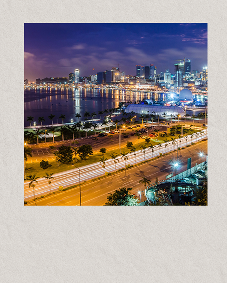
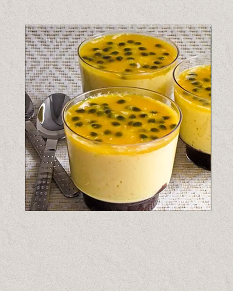
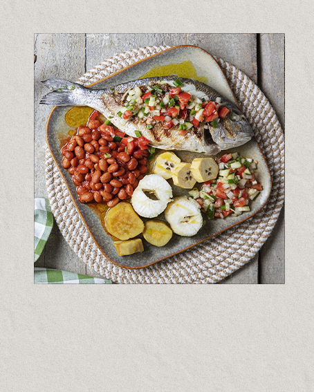
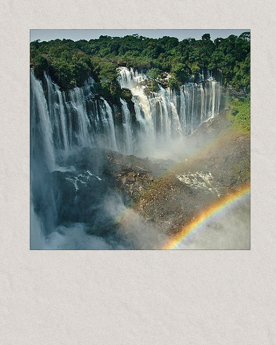

"L’Angola, terre de soleil et de passion 🌍🇦🇴✨ Plages dorées 🏖️, montagnes vertes 🌿 et chutes puissantes 💦 : l’Angola est un coup de foudre. Entre Luanda, vibrante et moderne 🏙️🎶, et les traditions chaleureuses des provinces, chaque moment est une aventure. Ici, on danse la kizomba 💃, on savoure un mufete 🐟🔥, et on se laisse porter par l’accueil légendaire des Angolais. "Bem-vindo a casa!" (Bienvenue à la maison !) – une phrase qui dit tout. Un pays où la nature, la culture et la joie de vivre s’embrasent. 💛🖤💙😊"